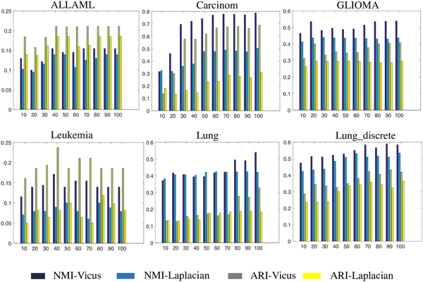

Biological networks entail important topological features and patterns critical to understanding interactions within complicated biological systems. Despite a great progress in understanding their structure, much more can be done to improve our inference and network analysis. Spectral methods play a key role in many network-based applications. Fundamental to spectral methods is the Laplacian, a matrix that captures the global structure of the network. Unfortunately, the Laplacian does not take into account intricacies of the network’s local structure and is sensitive to noise in the network. These two properties are fundamental to biological networks and cannot be ignored. We propose an alternative matrix Vicus. The Vicus matrix captures the local neighborhood structure of the network and thus is more effective at modeling biological interactions. We demonstrate the advantages of Vicus in the context of spectral methods by extensive empirical benchmarking on tasks such as single cell dimensionality reduction, protein module discovery and ranking genes for cancer subtyping. Our experiments show that using Vicus, spectral methods result in more accurate and robust performance in all of these tasks.